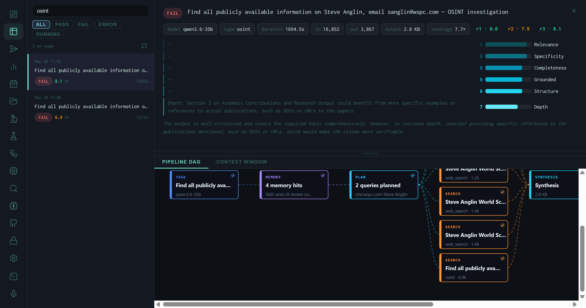
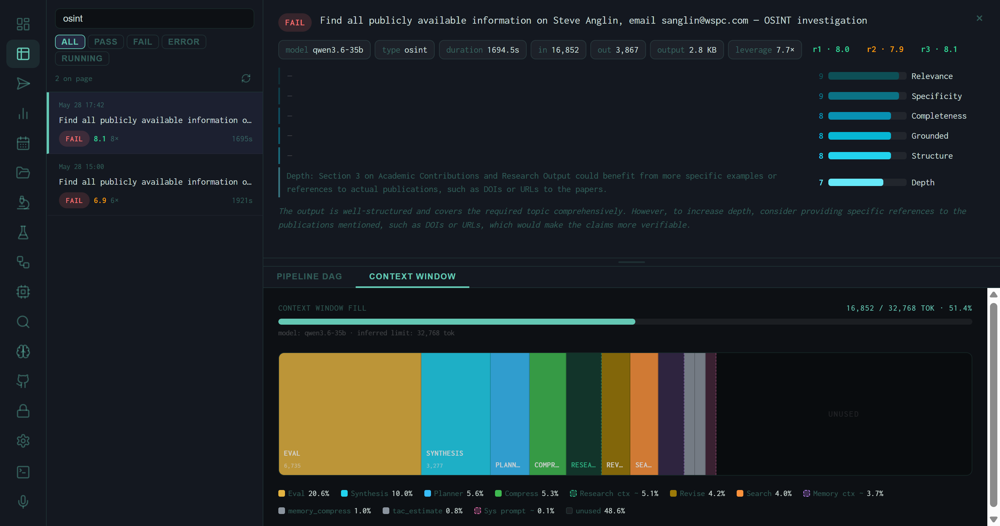

The OSINT Skill: 11-Layer Target Enrichment for Research Tasks
Automatic target detection from task strings, 11 parallel enrichment layers from DNS to breach databases, LLM-generated dork queries, and citation-tagged markdown injected directly into the synthesis context window.
Most research tasks the harness handles are about ideas — papers, practices, market dynamics. But occasionally a task contains something concrete: a domain name, an IP address, an email address, or a person's name. When that happens, the OSINT skill activates automatically, runs up to 11 enrichment layers in parallel against the target, and injects a structured brief into the synthesis context before the model writes its output.
The skill lives in harness/osint_tool.py and is purely additive: it enriches rather than replaces the normal research pipeline. The synthesis stage receives a richer context window; the output document gains a sourced OSINT section with traceable citations. No separate invocation is required — the skill fires or doesn't based on what the task string contains.
Target Detection
The first step is extracting what to enrich. Four regex patterns run against the task string:
.ai, .dev, .cloud). IPs that match the domain regex are excluded.
[A-Z][a-z]+ pairs) with a stop-word filter excluding org suffixes like Inc, Ltd, University. Matched names go to the Semantic Scholar author search layer.
The skill fires only when at least one domain or IP is detected. Person names and emails are enriched as secondary signals alongside their associated domain, not as standalone trigger types. Up to 2 domains, 2 IPs, 3 names, and 5 emails are extracted per task; duplicates are deduplicated before enrichment begins.
Intent Gating
A secondary gate, _osint_themes(), checks for OSINT-adjacent keywords in the task string — terms like domain, whois, subdomain, breach, infrastructure, vulnerability, certificate. This signal is surfaced to the planning stage so the model can adjust its search strategy, but the actual enrichment is controlled by target detection alone: a task with a domain in it will trigger enrichment regardless of whether any OSINT keywords appear.
The 11 Enrichment Layers
All layers that apply to a given target run in parallel via a ThreadPoolExecutor with a 25-second per-layer timeout. Layers are grouped into two paths — domain and IP — with the domain path running first and then enriching the resolved A-record IP as well.
Zero-Config Layers (No API Key Required)
socket.getaddrinfo. MX, NS, and TXT records via dnspython if installed. TXT records parsed for SPF and DMARC presence.
Server, X-Powered-By, HSTS, and CSP headers. robots.txt parsed for disallowed paths. /.well-known/security.txt checked for contact information.
rdap.org. Returns registrant name/org, registrar, registration date, expiration, last-changed, and name servers — all structured, no screen-scraping.
%.domain. Returns total cert count, unique subdomains (up to 20), issuing CAs, first cert date, latest cert date, and organization names from subject fields.
IPINFO_TOKEN unlocks richer fields. Runs against the first A record resolved from the domain's DNS.
internetdb.shodan.io/{ip} endpoint — completely free, no key. Returns open ports, known CVEs, hostnames, and Shodan tags (e.g. self-signed, honeypot).
Key-Gated Layers
All key-gated layers degrade gracefully: if the key is absent the layer returns an empty dict and is silently skipped in the formatter. A zero-config run still produces DNS, RDAP, crt.sh, Wayback, ipinfo, Shodan, and Semantic Scholar data — the most structurally informative layers — without any configuration.
Dork Query Generation
Alongside the parallel enrichment fetch, the skill can generate advanced search queries tailored to the task using the producer model. The generate_dork_queries() function makes a single low-temperature LLM call asking for targeted queries with advanced operators:
site:example.com filetype:pdf annual report 2025
intitle:"example.com" security disclosure
"example.com" breach OR leak inurl:pastebinThe prompt explicitly requests site:, filetype:, intitle:, inurl:, and exact-phrase operators, directing the model toward primary sources, official documentation, and datasets rather than summarized secondary content. The generated queries are returned to the caller (the research pipeline) to augment the normal web search step — they appear as SEARCH nodes in the Pipeline DAG alongside the OSINT enrichment node.
Output Format
The formatter assembles a structured markdown brief with one section per target. Each section is headed with the target identifier and contains labeled subsections for each layer that returned data:
## OSINT Enrichment *(retrieved 2026-05-28)*
### OSINT Brief: `example.com`
**Registration** [OSINT:RDAP:example.com:2026-05-28]
Registrant: **Example Org LLC**
Registrar: Namecheap, Inc.
Registered: 2018-03-14 Expires: 2027-03-14
**DNS** [OSINT:DNS:example.com:2026-05-28]
A: 104.21.44.123, 172.67.180.234
MX: alt1.aspmx.l.google.com
Email auth: SPF ✓ DMARC ✓
**Certificates (crt.sh)** [OSINT:CRTS:example.com:2026-05-28]
312 certs issued first: 2018-04-02
Subdomains found (14): api, app, docs, mail, ...
**Threat Intel (OTX)** [OSINT:OTX:example.com:2026-05-28]
Threat pulses: 0 (clean)Each subsection carries a citation tag in the format [OSINT:{SOURCE}:{target}:{YYYY-MM-DD}]. These tags are preserved through the synthesis stage and appear in the final output document, making every OSINT claim traceable to its source and retrieval date.
Pipeline Integration

Pipeline DAG for an OSINT investigation run. The OSINT enrichment appears as a dedicated SEARCH-type node (bottom, labeled osint · 0.9k) running in parallel with web-search queries. All results converge at SYNTHESIS.
In the pipeline, the OSINT enrichment block is treated as a special search result — it flows into the synthesis context window alongside web search results, memory context, and the planning output. The Pipeline DAG shows it as a node with type osint and a token count reflecting the size of the enrichment brief injected into the prompt.

Context Window fill for the OSINT run: 16,852 / 32,768 tokens at 51.4%. EVAL (20.6%) and SYNTHESIS (10%) are the largest consumers. The OSINT brief contributes to the RESEARCH CTX and SEARCH segments rather than appearing as a dedicated block.
The Layered Architecture in Practice
Domain profile
RDAP + DNS + crt.sh + Wayback together answer: who registered it, when, what infrastructure it resolves to, what subdomains exist, and how long it has been live. Four independent sources, no single point of failure.
Security posture
HTTP headers (HSTS, CSP, security.txt), Shodan open ports and CVEs, OTX threat pulse count, and HIBP breach exposure together give a surface-level security profile without active scanning.
Tech stack
urlscan.io via Wappalyzer identifies frameworks, CDNs, analytics, and CMS platforms from a passive scan result. Combined with HTTP headers and DNS nameservers, the hosting picture is usually complete.
Person enrichment
Semantic Scholar author search activates whenever a title-case bigram is detected. For academic or technical contacts, it surfaces publication record, citation count, affiliations, and recent paper titles — context that web search alone often buries.
Wiggum Evaluation of OSINT Runs
OSINT runs are evaluated by the same Wiggum rubric as other task types, with the scoring dimensions weighted toward the characteristics that matter for enrichment tasks: Relevance, Specificity, Completeness, Grounded, Structure, and Depth. The two OSINT runs in the system scored 8.1 and 6.9 — the lower score driven by the "Depth" dimension, where the evaluator noted that the academic contributions section lacked specific DOIs or URLs to cited publications.
This is a structural limitation of the Semantic Scholar layer: it returns paper titles and years but not persistent identifiers unless the papers appear in the API response's externalIds field. A future improvement would be to resolve DOIs for the top-cited papers before injecting them into the brief.
The OSINT skill enriches based on what is detectable in the task string. A task that mentions a domain incidentally — "research cloud security practices for AWS.com deployments" — will trigger domain enrichment on aws.com. The enrichment is usually harmless but adds latency and context tokens. The intent gate's keyword matching provides some protection, but is not a strict filter.
Running the Skill
The skill can be smoke-tested directly from the command line without invoking the full harness pipeline:
# Domain enrichment (zero-config)
python -m harness.osint_tool example.com
# IP enrichment
python -m harness.osint_tool 1.1.1.1
# Dork query generation
python -m harness.osint_tool --dorks "open source LLM security benchmarks"The CLI smoke-test runs the full enrichment stack, prints the formatted brief, and reports elapsed time — useful for verifying that API keys are loaded correctly and that each layer is returning data before running a full research task.